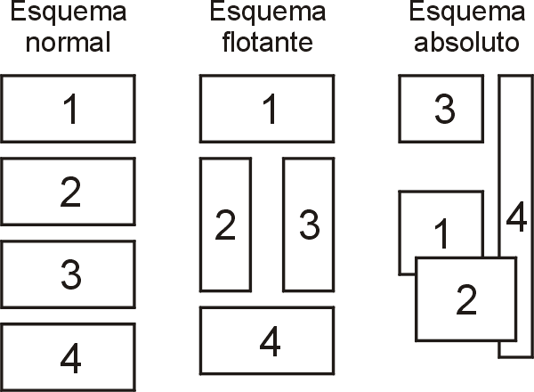

Posicionamiento flotante

Posicionamiento flotante de caracteres: letra capital
Las propiedades float y clear se pueden aplicar a cualquier elemento de una página web.
L
a primera letra de este párrafo
es una letra capital, es decir, una letra más grande que
ocupa varias líneas de texto.
Para ello, en la hoja de estilo hay que hacer la
letra flotante y aumentar su tamaño.
En este caso se ha cambiado también el color
y el tipo de letra para resaltar
el espacio ocupado por la primera letra.
Posicionamiento flotante first-letter
La primera letra de este párrafo
es una letra capital, es decir, una letra más grande que
ocupa varias líneas de texto.
Para ello, en la hoja de estilo hay que hacer la
letra flotante y aumentar su tamaño.
En este caso se ha cambiado también el color
y el tipo de letra para resaltar el
espacio ocupado por la primera letra.
La primera letra de este párrafo
es una letra capital, es decir,
una letra más grande que
ocupa varias líneas de texto.
Para ello, en la hoja de
estilo hay que hacer la
letra flotante y aumentar su tamaño.
En este caso se ha cambiado también el color
y el tipo de letra para resaltar el
espacio ocupado por la primera letra.